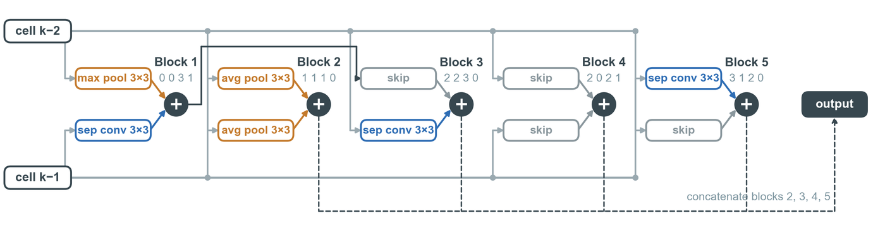

PO-NSGA: pessimism-oriented, surrogate-assisted evolutionary search for bi-objective neural architecture search
Finding a network that is both accurate and cheap to run usually means training thousands of candidates. In PO-NSGA, a genetic algorithm proposes architectures and a deep-ensemble predictor screens them with a pessimistic estimate. Only 10 of the 600 candidates in each generation are actually trained.
- 5.6×fewer trainings to reach NSGA-Net’s Pareto front on CIFAR-10 (350 vs. 1,970)
- 6 / 6front-quality metrics better than NSGA-Net, including hypervolume and IGD+
- 91%of a multi-objective Bayesian optimization (qNEHVI) front dominated at the same budget
- 22MFLOPs for the smallest network found, for edge AI
The project also shows why surrogate models fail in black-box search. The predictors were unbiased on random networks but over-predicted the networks they selected by about 8 points. This effect is known as the optimizer’s curse.
Along the way I compared MLP, graph neural network, Transformer and hybrid predictors in a closed-loop active-learning version of NSGA-Net. I tested them on a macro search space as well as the two-cell micro space.